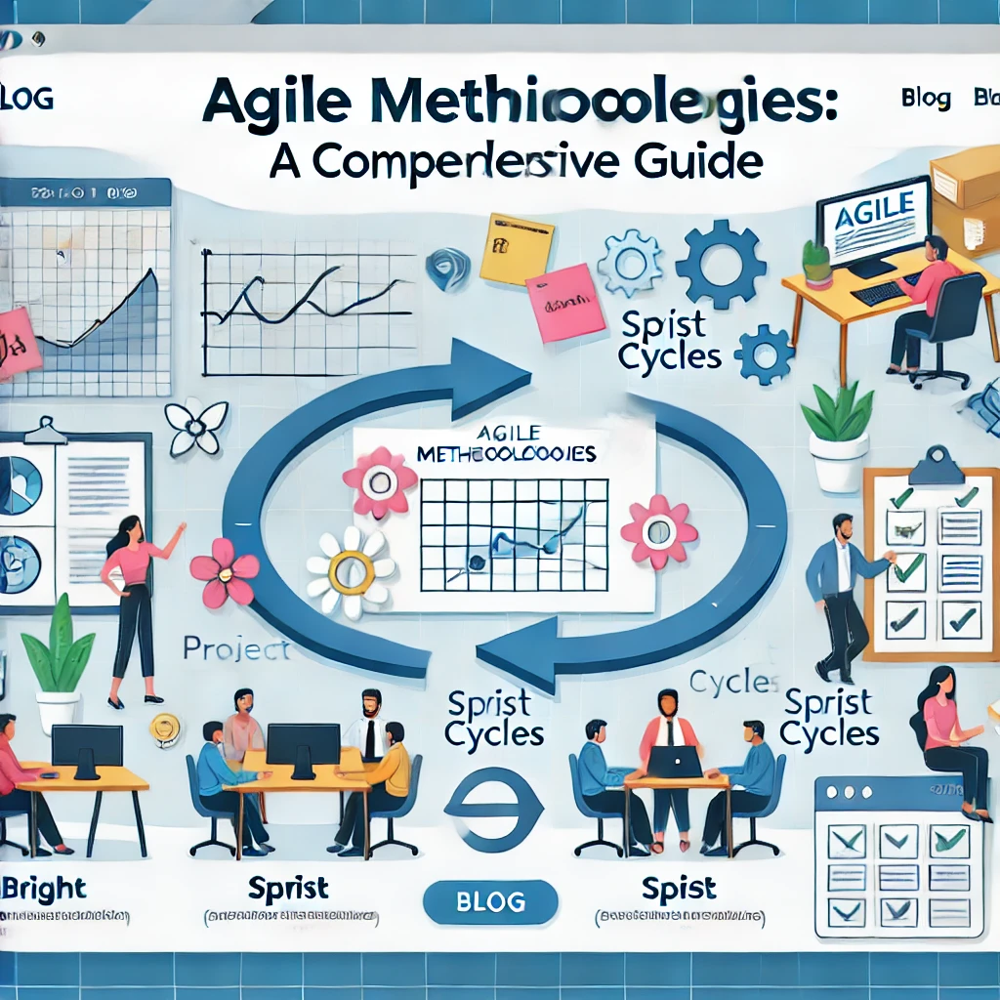

Agile Methodologies: A Comprehensive Guide
Published on April 24, 2026 • 8 min read

Agile is more than just a buzzword; it's a mindset that has revolutionized how teams build software. By prioritizing adaptability and customer feedback over rigid planning, Agile helps teams deliver value faster and with higher quality.
Core Principles of Agile
The Agile Manifesto emphasizes individuals and interactions over processes and tools, working software over comprehensive documentation, customer collaboration over contract negotiation, and responding to change over following a plan. These principles form the bedrock of any successful Agile implementation.
Popular Agile Frameworks
- Scrum: Centers around time-boxed sprints (usually 2-4 weeks) where a cross-functional team delivers a potentially shippable product increment. It utilizes specific roles like the Scrum Master and Product Owner.
- Kanban: Focuses on visualizing work, limiting work-in-progress (WIP), and maximizing flow. It's excellent for teams with continuous streams of requests, like support or maintenance.
- Extreme Programming (XP): Takes engineering practices to the extreme, emphasizing pair programming, test-driven development (TDD), and frequent releases.
Overcoming Common Pitfalls
Transitioning to Agile can be challenging. A common mistake is "Agile in name only," where teams adopt the terminology but retain traditional, rigid workflows. Success requires a cultural shift, buy-in from management, and a commitment to continuous improvement and open communication.
Conclusion
Implementing Agile methodologies empowers teams to build better products that actually meet user needs. While the transition takes effort, the resulting increase in speed, flexibility, and team morale is well worth the investment.